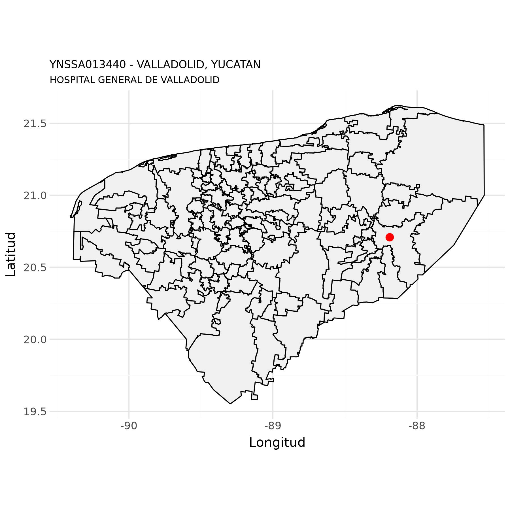
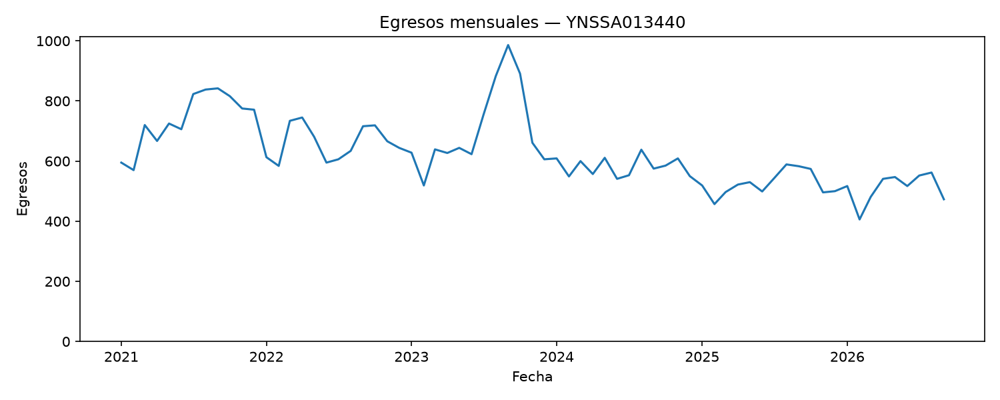
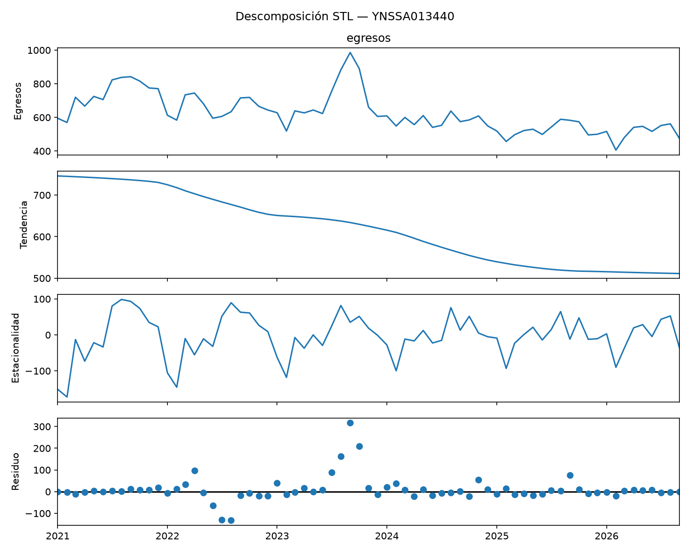
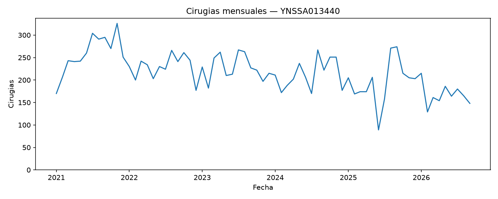
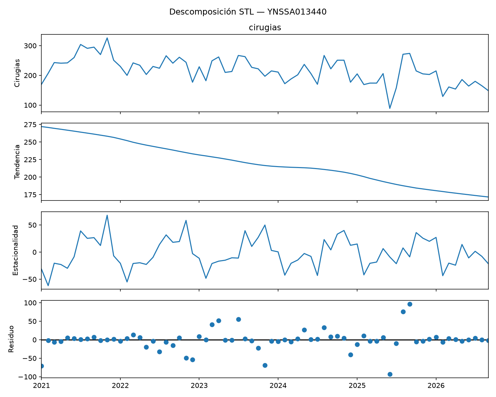
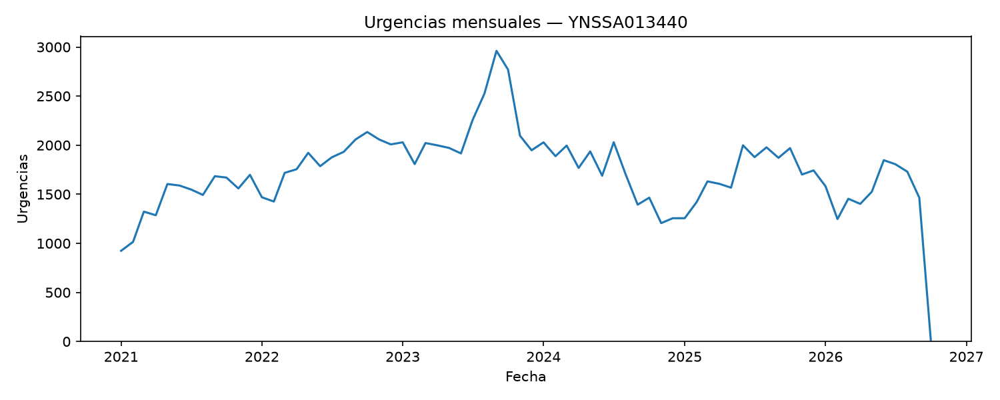
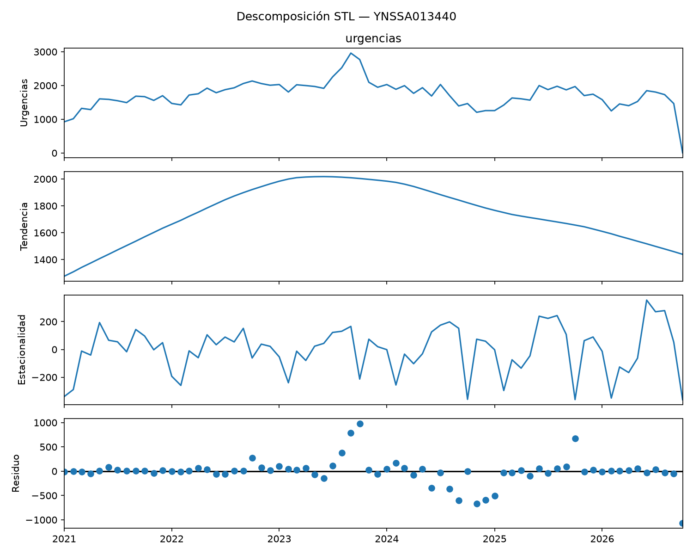

Datos de unidades de salud del IMSS Bienestar
HOSPITAL GENERAL DE VALLADOLID - YNSSA013440
5 de octubre de 2026
Luis
M. González

Datos generales
Con base en (Secretaría de Salud - DGIS, 23 de septiembre de 2026)
| Nombre de la unidad: | HOSPITAL GENERAL DE VALLADOLID |
| CLUES: | YNSSA013440 |
| Nivel de atención: | SEGUNDO NIVEL |
| Tipología: | HOSPITAL GENERAL |
| Subtipología: | NO ESPECIFICADO |
| Tipo de establecimiento: | HOSPITALIZACIÓN |
| Estrato: | URBANO |
| Estatus: | EN OPERACIÓN |
| Región: | SURESTE |
| Entidad: | YUCATÁN |
| Municipio: | VALLADOLID |
| Localidad: | VALLADOLID |
| Coordenadas: | 20.7088887, -88.1895839 |
| Domicilio: | AVENIDA VÍCTOR CERVERA PACHECO No. SIN NÚMERO Int. TABLAJE CATASTRAL 10343 |
| NINGUNO NINGUNO | |
| VALLADOLID, YUC | |
| CP 97780 | |
| Fecha de construcción: | 2013-02-27 |
| Fecha de inicio de operación: | 2015-02-27 |
| Propiedad del inmueble: | PROPIO |
| Último movimiento: | MODIFICACION |
| Fecha del último movimiento: | 2019-06-25 |
Mapa

Equipamiento médico
Con base en SINERHIAS: (Secretaría de Salud - DGIS, 14 de agosto de 2026)
Equipos de alto costo
| Equipo | ¿Funciona? | Procedimientos diarios | Actualización |
|---|---|---|---|
| MASTOGRAFO DIGITAL | SI | 20 | 2025-07-22 |
| TOMOGRAFO DE 16 CORTES O 20 CORTES | NO | 0 | 2026-01-23 |
Equipamiento médico (concentrado)
| Equipo | Funcionando | Fuera de servicio | Total |
|---|---|---|---|
| ANALIZADOR DE GASES EN SANGRE | 0 | 2 | 2 |
| ANALIZADOR DE LA COAGULACION (COAGULOMETRO) | 1 | 0 | 1 |
| ASPIRADOR DE SUCCION REGULABLE (DE PARED) | 0 | 103 | 103 |
| ASPIRADOR PORTATIL DE SUCCION CONTINUA | 2 | 0 | 2 |
| BASCULA CON ESTADIMETRO | 8 | 0 | 8 |
| BASCULA PARA BEBE | 9 | 1 | 10 |
| BOMBA DE INFUSION VOLUMETRICA | 11 | 42 | 53 |
| CAMILLA RADIOTRANSPARENTE | 0 | 5 | 5 |
| CARDIOTOCOGRAFO | 0 | 4 | 4 |
| CARRO ROJO CON DESFIBRILADOR MONITOR Y EQUIPO DE REANIMACION | 7 | 0 | 7 |
| CENTRIFUGA CON CABEZAL INTERCAMBIABLE | 1 | 1 | 2 |
| CENTRIFUGA DE MESA PARA TUBOS CAPILARES | 1 | 0 | 1 |
| COLPOSCOPIO | 1 | 0 | 1 |
| CUNA DE CALOR RADIANTE | 2 | 7 | 9 |
| CUNA DE CALOR RADIANTE CON FOTOTERAPIA | 3 | 5 | 8 |
| DESFIBRILADOR AUTOMATIZADO EXTERNO | 3 | 0 | 3 |
| ELECTROCARDIOGRAFO | 3 | 2 | 5 |
| EQUIPO DE CORRIENTES INTERFERENCIALES | 0 | 1 | 1 |
| EQUIPO PORTATIL PARA DETERMINAR HEMOGLOBINA GLUCOSILADA | 1 | 0 | 1 |
| ESFIGMOMANOMETRO ANEROIDE | 15 | 0 | 15 |
| ESFIGMOMANOMETRO ELECTRONICO | 3 | 0 | 3 |
| ESTERILIZADOR DE VAPOR | 1 | 2 | 3 |
| ESTETOSCOPIO BIAURICULAR | 8 | 0 | 8 |
| ESTUCHE DE DIAGNOSTICO COMPLETO (OFTALMOSCOPIO Y OTOSCOPIO) | 1 | 0 | 1 |
| FONODETECTOR DE LATIDOS FETALES | 2 | 1 | 3 |
| INCUBADORA DE TRASLADO | 3 | 0 | 3 |
| INCUBADORA PARA CUIDADOS GENERALES | 7 | 11 | 18 |
| LAMPARA DE FOTOTERAPIA | 6 | 2 | 8 |
| LAMPARA DE HAZ DIRECCIONABLE | 6 | 0 | 6 |
| LAMPARA DE HENDIDURA | 1 | 0 | 1 |
| LAMPARA QUIRURGICA DOBLE | 2 | 1 | 3 |
| LAMPARA QUIRURGICA PORTATIL PARA EMERGENCIA | 1 | 1 | 2 |
| MESA DE CIRUGIA OBSTETRICA | 2 | 0 | 2 |
| MESA DE EXPLORACION GENERAL | 3 | 0 | 3 |
| MESA QUIRURGICA | 2 | 1 | 3 |
| MICROSCOPIO BASICO DE RUTINA | 1 | 0 | 1 |
| MONITOR DE SIGNOS VITALES AVANZADO (ECG, PANI. SPO2, TEMP,PRESION INVASIVA, CO2, GASTO CARDIACO, RELAJACION NEUROMUSCULA | 4 | 0 | 4 |
| MONITOR DE SIGNOS VITALES BASICO (ECG, PANI. SPO2, TEMP) | 33 | 8 | 41 |
| MONITOR DE SIGNOS VITALES DE TRASLADO | 3 | 0 | 3 |
| MONITOR DE SIGNOS VITALES INTERMEDIO (ECG, PANI. SPO2, TEMP,PRESION INVASIVA, CO2) | 4 | 0 | 4 |
| MONITOR DE SIGNOS VITALES NEONATAL (ECG, PANI. SPO2, TEMP,PRESION INVASIVA, CO2, EEG) | 5 | 1 | 6 |
| NEGATOSCOPIO | 21 | 1 | 22 |
| OXIMETRO DE PULSO CON DESPLIEGUE DE CURVA DE PLETISMOGRAFIA | 7 | 0 | 7 |
| REANIMADOR MANUAL | 9 | 0 | 9 |
| REANIMADOR MANUAL PARA RECIEN NACIDO | 6 | 0 | 6 |
| REFRIGERADOR PARA LABORATORIO CLINICO | 1 | 0 | 1 |
| REFRIGERADOR PARA RESGUARDO DE LECHE MATERNA | 1 | 0 | 1 |
| REFRIGERADOR PARA VACUNAS | 1 | 0 | 1 |
| RESPIRADOR DE ASISTENCIA VENTILATORIA(OTROS MODELOS) | 0 | 4 | 4 |
| SIERRA CORTA YESOS | 2 | 0 | 2 |
| SISTEMA INMOVILIZACION | 2 | 0 | 2 |
| SISTEMAS DE ARCHIVO Y COMUNICACION DE IMAGENES (PACS) | 1 | 1 | 2 |
| ULTRASONIDO DE DIAGNOSTICO | 2 | 5 | 7 |
| UNIDAD DE ANESTESIA INTERMEDIA | 3 | 0 | 3 |
| UNIDAD DE ELECTROCIRUGIA GENERAL | 3 | 0 | 3 |
| UNIDAD DE ULTRASONIDO TERAPEUTICO | 0 | 1 | 1 |
| UNIDAD RADIOLOGICA DE PROPOSITO GENERAL (ANALOGICO) | 0 | 1 | 1 |
| UNIDAD RADIOLOGICA PORTATIL ANALOGICA (EQUIPO PORTATIL DE RAYOS X) | 0 | 2 | 2 |
| UNIDAD RADIOLOGICA PORTATIL DIGITAL (EQUIPO PORTATIL DE RAYOS X) | 1 | 0 | 1 |
| VENTILADOR ADULTO - PEDIATRICO | 19 | 6 | 25 |
| VENTILADOR ADULTO - PEDIATRICO - NEONATAL | 7 | 6 | 13 |
| VENTILADOR DE ALTA FRECUENCIA OSCILATORIA PEDIATRICO - NEONATAL CON MODO CONVENCIONAL | 0 | 1 | 1 |
| VENTILADOR DE TRASLADO PEDIATRICO - ADULTO | 7 | 0 | 7 |
| VENTILADOR DE TRASLADO PEDIATRICO-ADULTO | 7 | 0 | 7 |
| VENTILADOR NEONATAL PARA CUIDADOS INTENSIVOS | 1 | 4 | 5 |
Egresos hospitalarios
Con base en (Secretaría de Salud - DGIS, 05 de octubre de 2026a)
Número de egresos
| Año | Egresos |
|---|---|
| 2021 | 8,848 |
| 2022 | 7,937 |
| 2023 | 8,461 |
| 2024 | 6,977 |
| 2025 | 6,309 |
| 2026 | 4,596 |


Top 20 de afecciones principales
| Posición | Afección principal | Egresos |
|---|---|---|
| 1 | PARTO ÚNICO ESPONTÁNEO, SIN OTRA ESPECIFICACIÓN | 849 |
| 2 | PARTO POR CESÁREA, SIN OTRA ESPECIFICACIÓN | 654 |
| 3 | HIPERTENSIÓN GESTACIONAL [INDUCIDA POR EL EMBARAZO] | 229 |
| 4 | PREECLAMPSIA LEVE A MODERADA | 133 |
| 5 | DIABETES MELLITUS QUE SE ORIGINA CON EL EMBARAZO | 131 |
| 6 | TRAUMATISMO SUPERFICIAL DE LA CABEZA, PARTE NO ESPECIFICADA | 125 |
| 7 | NEUMONÍA, NO ESPECIFICADA | 107 |
| 8 | OLIGOHIDRAMNIOS | 87 |
| 9 | PREECLAMPSIA SEVERA | 77 |
| 10 | CÁLCULO DE LA VESÍCULA BILIAR CON COLECISTITIS AGUDA | 76 |
| 11 | DIABETES MELLITUS TIPO 2, SIN MENCIÓN DE COMPLICACIÓN | 55 |
| 12 | APENDICITIS, NO ESPECIFICADA | 55 |
| 13 | INFECCIÓN DE VÍAS URINARIAS, SITIO NO ESPECIFICADO | 54 |
| 14 | OTRAS COLELITIASIS | 47 |
| 15 | ANEMIA DE TIPO NO ESPECIFICADO | 46 |
| 16 | HIPERTENSIÓN ESENCIAL (PRIMARIA) | 42 |
| 17 | CÁLCULO DE LA VESÍCULA BILIAR CON OTRA COLECISTITIS | 42 |
| 18 | DIABETES MELLITUS TIPO 2, CON COMPLICACIONES CIRCULATORIAS PERIFÉRICAS | 42 |
| 19 | SÍNDROME DE RESPUESTA INFLAMATORIA SISTÉMICA DE ORIGEN NO INFECCIOSO, SIN FALLA ORGÁNICA | 42 |
| 20 | RUPTURA PREMATURA DE LAS MEMBRANAS, SIN OTRA ESPECIFICACIÓN | 40 |
| 21 | OTROS | 3,233 |
Servicios de ingreso
| Posición | Servicio de ingreso | Egresos |
|---|---|---|
| 1 | GINECO OBSTETRICIA | 2,795 |
| 2 | MEDICINA INTERNA | 1,162 |
| 3 | CIRUGÍA GENERAL | 667 |
| 4 | OTROS SERVICIOS DE ADULTOS | 564 |
| 5 | PEDIATRÍA | 502 |
| 6 | ORTOPEDIA | 252 |
| 7 | GINECOLOGÍA | 200 |
| 8 | UNIDAD DE TERAPIA INTERMEDIA | 19 |
| 9 | NO APLICA | 2 |
| 10 | NEFROLOGÍA | 1 |
| 11 | OTROS | 2 |
Servicios de egreso
| Posición | Servicio de egreso | Egresos |
|---|---|---|
| 1 | GINECO OBSTETRICIA | 2,797 |
| 2 | MEDICINA INTERNA | 1,163 |
| 3 | CIRUGÍA GENERAL | 665 |
| 4 | OTROS SERVICIOS DE ADULTOS | 564 |
| 5 | PEDIATRÍA | 502 |
| 6 | ORTOPEDIA | 252 |
| 7 | GINECOLOGÍA | 200 |
| 8 | UNIDAD DE TERAPIA INTERMEDIA | 19 |
| 9 | MEDICINA MATERNO FETAL | 2 |
| 10 | CIRUGÍA ONCOLÓGICA | 1 |
| 11 | OTROS | 1 |
Procedencia
| Posición | Procedencia | Egresos |
|---|---|---|
| 1 | URGENCIAS | 6,044 |
| 2 | CONSULTA EXTERNA | 95 |
| 3 | OTRO | 24 |
| 4 | CUNERO PATOLÓGICO | 3 |
Motivo de egreso
| Posición | Motivo de egreso | Egresos |
|---|---|---|
| 1 | MEJORÍA | 5,516 |
| 2 | TRASLADO A OTRA UNIDAD | 384 |
| 3 | DEFUNCIÓN | 184 |
| 4 | VOLUNTARIO | 68 |
| 5 | CURACIÓN | 7 |
| 6 | OTRO | 6 |
| 7 | FUGA | 1 |
Número de procedimientos quirúrgicos
| Año | Cirugías |
|---|---|
| 2021 | 14,036 |
| 2022 | 13,300 |
| 2023 | 13,815 |
| 2024 | 16,415 |
| 2025 | 23,753 |
| 2026 | 17,736 |


Procedimientos quirúrgicos de egresos
| Posición | Procedimiento quirúrgico | Egresos |
|---|---|---|
| 1 | CESÁREA CLÁSICA BAJA | 1,303 |
| 2 | OTRA DESTRUCCIÓN U OCLUSIÓN BILATERAL DE LAS TROMPAS DE FALOPIO | 225 |
| 3 | COLECISTECTOMÍA LAPAROSCÓPICA | 103 |
| 4 | LIGADURA Y SECCIÓN ENDOSCÓPICA BILATERAL DE LAS TROMPAS DE FALOPIO | 92 |
| 5 | EPISIOTOMÍA | 85 |
| 6 | OTRA LIGADURA Y SECCIÓN BILATERAL DE LAS TROMPAS DE FALOPIO | 73 |
| 7 | DILATACIÓN Y LEGRADO DESPUÉS DE PARTO O ABORTO | 51 |
| 8 | OTRA APENDICECTOMÍA | 37 |
| 9 | OTRA DESTRUCCIÓN U OCLUSIÓN ENDOSCÓPICA BILATERAL DE LAS TROMPAS DE FALOPIO | 35 |
| 10 | LAPAROTOMÍA EXPLORADORA | 34 |
| 11 | OTRO LEGRADO POR ASPIRACIÓN DEL ÚTERO | 31 |
| 12 | CIERRE DE PIEL Y TEJIDO SUBCUTÁNEO DE OTROS SITIOS | 29 |
| 13 | AMPUTACIÓN DE DEDO DE PIE | 24 |
| 14 | CATETERISMO URETERAL | 20 |
| 15 | CISTOSTOMÍA PERCUTÁNEA | 19 |
| 16 | OTRA REPARACIÓN DE VAGINA | 18 |
| 17 | TERAPIA CON OXIGENO SUPERSATURADO | 18 |
| 18 | COLECISTECTOMÍA | 17 |
| 19 | APENDICECTOMÍA LAPAROSCÓPICA | 17 |
| 20 | REPARACIÓN DE DESGARRO OBSTÉTRICO ACTUAL DEL ÚTERO, NO ESPECIFICADO DE OTRA MANERA | 13 |
| 21 | OTROS | 310 |
Procedimientos terapeúticos de egresos
| Posición | Procedimiento terapéutico | Egresos |
|---|---|---|
| 1 | OTRA PUNCIÓN DE VENA | 5,362 |
| 2 | FLUIDOTERAPIA | 5,232 |
| 3 | EXTRACCIÓN DE SONDA URETRAL | 1,246 |
| 4 | OTRO PARTO ASISTIDO MANUALMENTE | 1,000 |
| 5 | CURACIÓN DE HERIDA | 94 |
| 6 | TRANSFUSIÓN DE SANGRE (PARA CAMBIO) | 90 |
| 7 | RETIRO DE SONDA VESICAL | 69 |
| 8 | CATETERISMO VENOSO, NO CLASIFICADO BAJO OTRO CONCEPTO | 64 |
| 9 | CATETERISMO DE VENA UMBILICAL | 54 |
| 10 | INSERCIÓN DE TUBO ENDOTRAQUEAL | 30 |
| 11 | OTRO ULTRASONIDO TERAPÉUTICO | 28 |
| 12 | OTRA FOTOTERAPIA | 27 |
| 13 | OTRA TRANSFUSIÓN DE SANGRE ENTERA | 23 |
| 14 | OTRO ENRIQUECIMIENTO POR OXÍGENO | 21 |
| 15 | INYECCIÓN DE ANTIBIÓTICO | 20 |
| 16 | MEDICACIÓN RESPIRATORIA ADMINISTRADA MEDIANTE NEBULIZADOR | 19 |
| 17 | OTRA INTUBACIÓN DEL TRACTO RESPIRATORIO | 15 |
| 18 | VENTILACIÓN MECÁNICA NO INVASIVA | 14 |
| 19 | INSTALACIÓN DE SONDA VESICAL | 12 |
| 20 | INSERCIÓN DE OTRO TUBO (NASO-) GÁSTRICO | 11 |
| 21 | OTROS | 90 |
Procedimientos de diagnóstico de egresos
| Posición | Procedimiento de diagnóstico | Egresos |
|---|---|---|
| 1 | EXAMEN MICROSCÓPICO DE SANGRE. OTRO EXAMEN MICROSCÓPICO | 5,773 |
| 2 | OTROS PROCEDIMIENTOS DIAGNÓSTICOS SOBRE EL CUELLO UTERINO | 1,764 |
| 3 | CARDIOTOCOGRAFÍA (PSS) | 67 |
| 4 | ELECTROCARDIOGRAMA | 62 |
| 5 | OTRAS RADIOGRAFÍAS DE TEJIDOS BLANDOS DE PARED TORÁCICA | 46 |
| 6 | GASOMETRÍA INTRA ARTERIAL CONTINUA | 16 |
| 7 | RADIOGRAFÍA TORÁCICA RUTINARIA, DESCRITA COMO TAL | 15 |
| 8 | MONITORIZACIÓN DE PRESIÓN ARTERIAL SISTÉMICA | 13 |
| 9 | TOMOGRAFÍA AXIAL COMPUTARIZADA DEL ABDÓMEN | 12 |
| 10 | OTRAS RADIOGRAFÍAS DE ABDOMEN | 10 |
| 11 | TOMOGRAFÍA AXIAL COMPUTARIZADA DE CABEZA | 10 |
| 12 | OTRAS RADIOGRAFÍAS, NO ESPECIFICADAS | 9 |
| 13 | RADIOGRAFÍA ÓSEA DEL MUSLO, LA RODILLA Y LA PIERNA INFERIOR | 7 |
| 14 | ULTRASONOGRAFIA DIAGNÓSTICA DEL ABDOMEN Y EL RETROPERITONEO | 7 |
| 15 | EXAMEN OFTALMOLÓGICO, NO ESPECIFICADO DE OTRA MANERA | 5 |
| 16 | OTRAS TOMOGRAFÍAS DE ABDOMEN | 4 |
| 17 | LAPAROSCOPIA | 3 |
| 18 | EXAMEN MICROSCÓPICO DE SANGRE. PARASITOLOGÍA | 3 |
| 19 | RADIOGRAFÍA ÓSEA DEL CODO Y EL ANTEBRAZO | 3 |
| 20 | ULTRASONOGRAFÍA DIAGNÓSTICA DEL ÚTERO GRÁVIDO | 3 |
| 21 | OTROS | 64 |
Urgencias
Con base en (Secretaría de Salud - DGIS, 05 de octubre de 2026b)
Número de urgencias
| Año | Urgencias |
|---|---|
| 2021 | 17,394 |
| 2022 | 22,143 |
| 2023 | 26,301 |
| 2024 | 20,358 |
| 2025 | 20,621 |
| 2026 | 14,065 |


Top 20 de afecciones principales
| Posición | Afección principal | Urgencias |
|---|---|---|
| 1 | DONANTE DE SANGRE | 1,632 |
| 2 | INERCIA UTERINA SECUNDARIA | 1,054 |
| 3 | SUPERVISIÓN DE EMBARAZO NORMAL NO ESPECIFICADO | 990 |
| 4 | OTRAS ATENCIONES MÉDICAS ESPECIFICADAS | 929 |
| 5 | PARTO ÚNICO ESPONTÁNEO, SIN OTRA ESPECIFICACIÓN | 625 |
| 6 | COMPLICACIÓN NO ESPECIFICADA DEL TRABAJO DE PARTO Y DEL PARTO | 463 |
| 7 | GASTROENTERITIS Y COLITIS DE ORIGEN NO ESPECIFICADO | 446 |
| 8 | TRAUMATISMOS SUPERFICIALES MÚLTIPLES, NO ESPECIFICADOS | 404 |
| 9 | HIPERTENSIÓN GESTACIONAL [INDUCIDA POR EL EMBARAZO] | 334 |
| 10 | PROCEDIMIENTO NO REALIZADO POR DECISIÓN DEL PACIENTE, POR OTRAS RAZONES Y LAS NO ESPECIFICADAS | 331 |
| 11 | DIABETES MELLITUS QUE SE ORIGINA CON EL EMBARAZO | 324 |
| 12 | SUFRIMIENTO MATERNO DURANTE EL TRABAJO DE PARTO Y EL PARTO | 312 |
| 13 | OTROS DOLORES ABDOMINALES Y LOS NO ESPECIFICADOS | 279 |
| 14 | TRASTORNOS DEL HÍGADO EN EL EMBARAZO, EL PARTO Y EL PUERPERIO | 270 |
| 15 | ATENCIÓN MATERNA POR DÉFICIT DEL CRECIMIENTO FETAL | 256 |
| 16 | HIPERTENSIÓN ESENCIAL (PRIMARIA) | 248 |
| 17 | OLIGOHIDRAMNIOS | 218 |
| 18 | FALSO TRABAJO DE PARTO ANTES DE LAS 37 SEMANAS COMPLETAS DE GESTACIÓN | 218 |
| 19 | INFECCIÓN DE VÍAS URINARIAS, SITIO NO ESPECIFICADO | 206 |
| 20 | AMENAZA DE ABORTO | 200 |
| 21 | OTROS | 9,733 |
Motivo de atención
| Posición | Motivo de urgencia | Urgencias |
|---|---|---|
| 1 | MÉDICA | 11,718 |
| 2 | GINECO-OBSTÉTRICA | 6,966 |
| 3 | ACCIDENTES, ENVENENAMIENTO Y VIOLENCIA | 443 |
| 4 | PEDIÁTRICA | 345 |
Tipo de urgencia
| Posición | Tipo de urgencia | Urgencias |
|---|---|---|
| 1 | URGENCIA NO CALIFICADA | 18,641 |
| 2 | URGENCIA CALIFICADA | 831 |
Tipo de cama
| Posición | Tipo de cama | Urgencias |
|---|---|---|
| 1 | NO ESPECIFICADO | 9,944 |
| 2 | SIN CAMA | 8,025 |
| 3 | CAMA DE OBSERVACION | 1,426 |
| 4 | CAMA DE CHOQUE | 77 |
Enviado a…
| Posición | Enviado a | Urgencias |
|---|---|---|
| 1 | DOMICILIO | 13,094 |
| 2 | HOSPITALIZACIÓN | 4,323 |
| 3 | CONSULTA EXTERNA | 1,483 |
| 4 | SALE POR FUGA | 343 |
| 5 | SALE POR VOLUNTAD PROPIA | 173 |
| 6 | TRASLADO A OTRA UNIDAD | 45 |
| 7 | SALE POR DEFUNCIÓN | 11 |
Procedimientos quirúrgicos de urgencias
| Posición | Procedimiento quirúrgico | Urgencias |
|---|---|---|
| 1 | CIERRE DE PIEL Y TEJIDO SUBCUTÁNEO DE OTROS SITIOS | 302 |
| 2 | OTRA INCISIÓN CON DRENAJE DE PIEL Y TEJIDO SUBCUTÁNEO | 9 |
| 3 | TERAPIA CON OXIGENO SUPERSATURADO | 8 |
| 4 | REDUCCIÓN CERRADA DE LUXACIÓN DE OTROS SITIOS ESPECIFICADOS | 5 |
| 5 | EXCISIÓN DE PIEL PARA INJERTO | 3 |
| 6 | REDUCCIÓN CERRADA DE LUXACIÓN DE HOMBRO | 3 |
| 7 | INCISIÓN CON EXTRACCIÓN DE CUERPO EXTRAÑO O DISPOSITIVO DE PIEL Y TEJIDO SUBCUTÁNEO | 2 |
| 8 | INSERCIÓN DE PRÓTESIS PARCIAL DE DISCO INTERVERTEBRAL, CERVICAL | 2 |
| 9 | CISTOSTOMÍA PERCUTÁNEA | 2 |
| 10 | ASPIRACIÓN O LAVADO DE SENO NASAL (MAXILAR), A TRAVÉS DE ORIFICIO NATURAL | 2 |
| 11 | REDUCCIÓN CERRADA DE LUXACIÓN DE CODO | 2 |
| 12 | OTRA EXISIÓN O DESTRUCCIÓN DEL ÚTERO Y SUS ESTRUCTURAS DE SOPORTE | 1 |
| 13 | OTRA EXTIRPACIÓN LOCAL O DESTRUCCIÓN DE LESIÓN O TEJIDO DE PIEL Y TEJIDO SUBCUTÁNEO | 1 |
| 14 | OTRAS OPERACIONES SOBRE MÚSCULO, TENDÓN, FASCIA Y BOLSA SINOVIAL | 1 |
| 15 | OTRAS OPERACIONES SOBRE PULMÓN | 1 |
| 16 | OTRAS OPERACIONES SOBRE VÁLVULAS CARDÍACAS | 1 |
| 17 | OTRAS OPERACIONES SOBRE VASOS | 1 |
| 18 | OTRAS OPERACIONES SOBRE VEJIGA | 1 |
| 19 | PUNCIÓN DE SENO NASAL (MAXILAR) PARA ASPIRACIÓN O LAVADO | 1 |
| 20 | REDUCCIÓN ABIERTA DE FRACTURA CON FIJACIÓN INTERNA. FALANGES Y PIE | 1 |
| 21 | OTROS | 11 |
Procedimientos terapeúticos de urgencias
| Posición | Procedimiento terapéutico | Urgencias |
|---|---|---|
| 1 | OTROS PROCEDIMIENTOS RESPIRATORIOS | 10,884 |
| 2 | OTRA PUNCIÓN DE VENA | 4,404 |
| 3 | FLUIDOTERAPIA | 2,705 |
| 4 | OTRO ULTRASONIDO TERAPÉUTICO | 699 |
| 5 | CURACIÓN DE HERIDA | 576 |
| 6 | INYECCIÓN O INFUSIÓN DE OTRA SUSTANCIA TERAPÉUTICA O PROFILÁCTICA | 161 |
| 7 | APLICACIÓN DE FÉRULA | 154 |
| 8 | APLICACIÓN DE OTRO VENDAJE DE HERIDA | 128 |
| 9 | MEDICACIÓN RESPIRATORIA ADMINISTRADA MEDIANTE NEBULIZADOR | 92 |
| 10 | INSERCIÓN DE CATÉTER URINARIO PERMANENTE | 56 |
| 11 | INSTALACIÓN DE SONDA VESICAL | 28 |
| 12 | SUSTITUCIÓN DE CATÉTER URINARIO PERMANENTE | 15 |
| 13 | TRANSFUSIÓN DE SANGRE (PARA CAMBIO) | 14 |
| 14 | CATETERISMO VENOSO, NO CLASIFICADO BAJO OTRO CONCEPTO | 12 |
| 15 | IRRIGACIÓN DEL OÍDO | 4 |
| 16 | INSERCIÓN DE TUBO ENDOTRAQUEAL | 4 |
| 17 | EXTRACCIÓN DE SONDA URETRAL | 4 |
| 18 | APLICACIÓN DE VENDAJE ENYESADO | 3 |
| 19 | MÉTODOS DE RESUSCITACIÓN NO MECÁNICOS | 3 |
| 20 | OTRO CONTROL DE PRESIÓN Y COMPOSICIÓN ATMOSFÉRICAS | 3 |
| 21 | OTROS | 37 |
Procedimientos de diagnóstico de urgencias
| Posición | Procedimiento de diagnóstico | Urgencias |
|---|---|---|
| 1 | MONITORIZACIÓN DE PRESIÓN ARTERIAL SISTÉMICA | 10,935 |
| 2 | EXAMEN MICROSCÓPICO DE SANGRE. OTRO EXAMEN MICROSCÓPICO | 5,172 |
| 3 | CARDIOTOCOGRAFÍA (PSS) | 1,021 |
| 4 | OTROS PROCEDIMIENTOS DIAGNÓSTICOS SOBRE EL CUELLO UTERINO | 543 |
| 5 | ELECTROCARDIOGRAMA | 167 |
| 6 | GASOMETRÍA INTRA ARTERIAL CONTINUA | 130 |
| 7 | RADIOGRAFÍA TORÁCICA RUTINARIA, DESCRITA COMO TAL | 67 |
| 8 | OTRAS ULTRASONOGRAFÍAS DIAGNÓSTICAS | 61 |
| 9 | RADIOGRAFÍA ÓSEA DE LA MUÑECA Y LA MANO | 35 |
| 10 | RADIOGRAFÍA ÓSEA DEL TOBILLO Y EL PIE | 32 |
| 11 | OTRAS RADIOGRAFÍAS DE TEJIDOS BLANDOS DE PARED TORÁCICA | 26 |
| 12 | RADIOGRAFÍA ÓSEA DEL HOMBRO Y EL BRAZO SUPERIOR | 26 |
| 13 | RADIOGRAFÍA ÓSEA DEL CODO Y EL ANTEBRAZO | 23 |
| 14 | RADIOGRAFÍA ÓSEA DEL MUSLO, LA RODILLA Y LA PIERNA INFERIOR | 19 |
| 15 | OTRA RADIOGRAFÍA DE TEJIDO BLANDO DE CARA, CABEZA Y CUELLO | 10 |
| 16 | RECONOCIMIENTO MÉDICO GENERAL | 9 |
| 17 | TOMOGRAFÍA AXIAL COMPUTARIZADA DE CABEZA | 7 |
| 18 | OTRAS RADIOGRAFÍAS DE ABDOMEN | 7 |
| 19 | ULTRASONOGRAFIA DIAGNÓSTICA DEL ABDOMEN Y EL RETROPERITONEO | 5 |
| 20 | OTRAS RADIOGRAFÍAS, NO ESPECIFICADAS | 4 |
| 21 | OTROS | 46 |
Indicadores
El cálculo de los indicadores estratégicos para evaluar el componente de atención en unidades de salud, fueron propuestos por (Servicios de Salud IMSS Bienestar, 2025).
Con las bases de datos compartidas por
DGIS, podemos calcular únicamente los
indicadores del 75 al 81 y el 84
El cálculo de los indicadores fue realizado para el siguiente rango de fechas:
Fecha inicial: 2026-01-01
Fecha final: 2026-09-30
Indicador 75. Razón de personal médico por cama
ATN-07
Fuente de datos:
- Catálogo de CLUES, (Secretaría de Salud - DGIS, 23 de septiembre de 2026)
- SINERHIAS, (Secretaría de Salud - DGIS, 14 de agosto de 2026)
Descripción
Estima el número de camas disponibles por médicos activos.
Proporciona una visión sobre la disponibilidad de médicos en relación al número de camas censables, en unidades hospitalarias del IMSS Bienestar.
Cálculo
\[ Indicador_{75} = \frac{m_{e}}{c_{c}} \]
Donde:
\(m_{e} =\) Total de médicos especialistas registrados en unidades del IMB
\(c_{c}=\) Total de camas censables
Calificaciones
| Calificación | Rango |
|---|---|
| Óptimo | 0.6 - 0.8 |
| Esperado | 0.4 - 0.59 |
| Regular | 0.2 - 0.39 |
| Crítico | < 0.2 |
Resultado
| clues | Médicos especialistas | Camas censables | Indicador 75 | Calificación |
|---|---|---|---|---|
| YNSSA013440 | 0 |
Indicador 77. Promedio de estancia hospitalaria
ATN-09
Fuente de datos:
- Catálogo de CLUES, (Secretaría de Salud - DGIS, 23 de septiembre de 2026)
- Egresos hospitalarios, (Secretaría de Salud - DGIS, 05 de octubre de 2026a)
- SINERHIAS, (Secretaría de Salud - DGIS, 14 de agosto de 2026)
Descripción
Exhibe número promedio de días que un paciente permanece internado en el hospital.
Proporciona una visión sobre la duración de las estancias hospitalarias y puede reflejar la eficiencia del cuidado médico y la complejidad de los casos atendidos, en hospitales del IMSS Bienestar.
Cálculo
\[ Indicador_{77} = \frac{d_{e}}{e_{h}} \]
Donde:
\(d_{e} =\) Total de días estancia de egresos hospitalarios durante periodo de análisis
\(e_{h} =\) Total de egresos hospitalarios
Calificaciones
| Calificación | Rango |
|---|---|
| Óptimo | 3.96 - 5.85 |
| Esperado | 5.86 - 6.42 |
| Regular | > 6.42 |
| Crítico | < 3.96 |
Resultado
| clues | Días estancia | Egresos | Indicador 77 | Calificación |
|---|---|---|---|---|
| YNSSA013440 | 14,555 | 4,596 | 3.17 | Crítico |
Indicador 78. Consulta de urgencias por consultorio
ATN-10
Fuente de datos:
- Catálogo de CLUES, (Secretaría de Salud - DGIS, 23 de septiembre de 2026)
- Urgencias, (Secretaría de Salud - DGIS, 05 de octubre de 2026b)
- SINERHIAS, (Secretaría de Salud - DGIS, 14 de agosto de 2026)
Descripción
Muestra el número de atenciones (consultas) de urgencia médica en promedio por consultorio disponible, de manera mensual en hospitales del IMSS Bienestar.
Cálculo
\[ Indicador_{78} = \frac{u_{m}}{c_{u} \cdot \Delta t} \]
Donde:
\(u_{m} =\) Total de atenciones en servicio de urgencias médicas
\(c_{u} =\) Total de consultorios registrados para el servicio de urgencia médica
\(\Delta t =\) Número de días del periodo de análisis
Calificaciones
| Calificación | Rango |
|---|---|
| Óptimo | 15 - 25 |
| Esperado | 10 - 14 o 26 - 30 |
| Regular | 5 - 9 o > 30 |
| Crítico | < 5 |
Resultado
| clues | Urgencias | Consultorios urgencias | Indicador 78 | Calificación |
|---|---|---|---|---|
| YNSSA013440 | 14,058 |
Indicador 79. Índice de rotación
ATN-11
Fuente de datos:
- Catálogo de CLUES, (Secretaría de Salud - DGIS, 23 de septiembre de 2026)
- Egresos hospitalarios, (Secretaría de Salud - DGIS, 05 de octubre de 2026a)
- SINERHIAS, (Secretaría de Salud - DGIS, 14 de agosto de 2026)
Descripción
Mide la Proporción de pacientes hospitalizados por cama disponible por mes.
Proporciona una visión sobre la utilización de la capacidad hospitalaria, en unidades de salud del IMSS Bienestar.
Cálculo
\[ Indicador_{79} = \frac{e_{h}}{c_{c} \cdot \Delta t} \]
Donde:
\(e_{h}=\) Total de egresos hospitalarios
\(c_{c} =\) Total de camas censables
\(\Delta t =\) Número de días del periodo de análisis
Calificaciones
| Calificación | Rango |
|---|---|
| Óptimo | 3.91 - 5.1 |
| Esperado | 3.0 - 3.90 o 5.11 - 6.0 |
| Regular | 2.0 - 2.9 |
| Crítico | < 2.0 |
Resultado
| clues | Egresos | Camas censables | Indicador 79 | Calificación |
|---|---|---|---|---|
| YNSSA013440 | 4,596 | 0 |
Indicador 80. Proporción de egresos por mejoría
ATN-12
Fuente de datos:
- Catálogo de CLUES, (Secretaría de Salud - DGIS, 23 de septiembre de 2026)
- Egresos hospitalarios, (Secretaría de Salud - DGIS, 05 de octubre de 2026a)
Descripción
Estima Porcentaje de egresos hospitalarios por motivo de curación o mejoría en unidades médicas del IMSS Bienestar dentro un periodo determinado.
Se relaciona con la eficacia en los tratamientos y la calidad de la atención.
Cálculo
\[ Indicador_{80} = \frac{e_{h_{m}}}{e_{h}} \times 100 \]
Donde:
\(e_{h}=\) Total de egresos hospitalarios
\(e_{h_{m}} =\) Número de egresos hospitalarios por motivo de curación o mejoría
Calificaciones
| Calificación | Rango |
|---|---|
| Óptimo | 95 - 100 |
| Esperado | 90 - 94.9 |
| Regular | 80 - 89.9 |
| Crítico | < 80 |
Resultado
| clues | Curación o mejoría | Egresos | Indicador 80 | Calificación |
|---|---|---|---|---|
| YNSSA013440 | 4,135 | 4,596 | 89.97 | Regular |
Indicador 81. Promedio diarios de eventos quirúrgicos por quirófano
ATN-13
Fuente de datos:
- Catálogo de CLUES, (Secretaría de Salud - DGIS, 23 de septiembre de 2026)
- Egresos hospitalarios, (Secretaría de Salud - DGIS, 05 de octubre de 2026a)
- SINERHIAS, (Secretaría de Salud - DGIS, 14 de agosto de 2026)
Descripción
Expresa el número promedio de cirugías realizadas por quirófanos habilitados durante un mes en hospitales del IMSS Bienestar.
Mide el grado de utilización de quirófanos en cirugías.
Cálculo
\[ Indicador_{81} = \frac{i_{q}}{s_{o} \cdot \Delta t} \]
Donde:
\(i_{q} =\) Número de cirugías realizadas por mes calendario
\(s_{o} =\) Número de quirófanos habilitados en unidades del IMB
\(\Delta t =\) Número de días del periodo de análisis
Calificaciones
| Calificación | Rango |
|---|---|
| Óptimo | 2.0 - 3.5 |
| Esperado | 1.0 - 1.9 o 3.6 - 4.0 |
| Regular | 0.5 - 0.9 o > 4.0 |
| Crítico | < 0.5 |
Resultado
| clues | Cirugías | Quirófanos | Indicador 81 | Calificación |
|---|---|---|---|---|
| YNSSA013440 | 1,502 |
Indicador 84. Mortalidad Hospitalaria
ATN-16
Fuente de datos:
- Catálogo de CLUES, (Secretaría de Salud - DGIS, 23 de septiembre de 2026)
- Egresos hospitalarios, (Secretaría de Salud - DGIS, 05 de octubre de 2026a)
Descripción
Muestra la relación entre el número de egresos por defunción y el total de egresos hospitalarios, excluyendo los egresos relacionados con la atención obstétrica
Cálculo
\[ Indicador_{84} = \frac{e_{h_{d}}}{e_{h}} \cdot 1000 \]
Donde:
\(e_{h_{d}} =\) Número de egresos por defunción ocurridos de manera intrahospitalaria
\(e_{h}=\) Total de egresos hospitalarios
En ambas variables, se excluyen los egresos relacionados con la atención obstétrica
Calificaciones
| Calificación | Rango |
|---|---|
| Óptimo | \(\leq\) 16.9 |
| Esperado | 17.0 - 23.9 |
| Regular | 24.0 - 30.9 |
| Crítico | \(\geq\) 31.0 |
Resultado
| clues | Defunciones | Egresos | Indicador 84 | Calificación |
|---|---|---|---|---|
| YNSSA013440 | 122 | 2,552 | 47.8 | Crítico |
Apéndice
Descargas
Descargar YNSSA013440.pdf